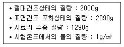
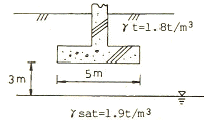
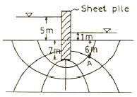
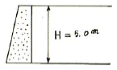
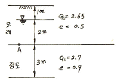
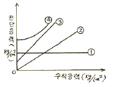
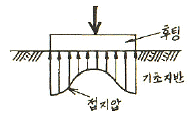

건설재료시험기사 (2008-09-07 기출문제)
1과목: 콘크리트공학
1. 조립률을 계산하기 위한 체의 조합으로 옳은 것은?
- 50mm, 30mm, 10mm, 5mm, 2.5mm, 1.2mm, 0.6mm, 0.3mm, 0.15mm
- 60mm, 30mm, 10mm, 5mm, 2.5mm, 1.2mm, 0.6mm, 0.3mm
- 80mm, 40mm, 20mm, 10mm, 5mm, 2.5mm, 1.2mm, 0.6mm, 0.3mm, 0.15mm
- 100mm, 50mm, 25mm, 10mm, 5mm, 2.5mm, 1.2mm, 0.6mm, 0.3mm, 0.15mm
(정답률: 80%)

2. 수중콘크리트 치기에 대한 설명으로 틀린 것은?
- 콘크리트를 수중에 낙하시키면 재료분리가 일어나고 시멘트가 유실되기 때문에 콘크리트는 수중에 낙하시켜서는 안된다.
- 대규모 공사나 중요한 구조물의 경우 밑열림 상자를 이용하여 콘크리트의 연속시공이 가능하도록 해야한다.
- 콘크리트 면을 가능한 한 수평하게 유지하면서 소정의 높이 또는 수면 상에 이를 때까지 연속해서 타설해야 한다.
- 한 구획의 콘크리트 타설을 완료한 후 레이턴스를 모두 제거하고 다시 타설하여야 한다.
(정답률: 알수없음)
3. 철근이 배치된 매스콘크리트의 일반적인 구조물에서 균열발생을 방지할 목적으로 선택해야 할 표준적인 온도 균열지수의 값은?
- 1.0이상
- 1.2이상
- 1.5이상
- 2.0이상
(정답률: 80%)
4. 일반콘크리트의 타설 및 다지기에 관한 설명으로 옳은 것은?
- 친 콘크리트를 거푸집안에서 횡방향으로 원활히 이동시켜야 한다.
- 슈트, 펌프배관 등의 배출구와 치기면까지의 높이는 1.5m이상을 원칙으로 한다.
- 깊은 보와 두꺼운 벽 등 부재가 두꺼운 경우 거푸집 진동기의 사용을 원칙으로 한다.
- 2층으로 나누어 타설할 경우 상층의 콘크리트는 원칙적으로 하층의 콘크리트가 굳기 시작하기 전에 쳐야한다.
(정답률: 82%)
5. 콘크리트의 중성화에 관한 설명으로 틀린 것은?
- 콘크리트 중의 수산화칼슘이 공기 중의 탄산가스와 반응하면 중성화가 진행된다.
- 중성화가 철근의 취치까지 도달하면 철근은 부식되기 시작한다.
- 공기중의 탄산가스의 농도가 높을수록, 온도가 높을수록 중성화 속도는 빨라진다.
- 중성화의 대책으로는 플라이애시와 같은 실리카질 혼화재를 시멘트와 혼합하여 사용하는 것이 좋다.
(정답률: 60%)
6. 굳지 않은 콘크리트 중의 전 염화물이온량은 원칙적으로 몇 kg/m3이하로 하는 것을 표준으로 하는가?
- 0.20kg/m3
- 0.30kg/m3
- 0.50kg/m3
- 0.70kg/m3
(정답률: 알수없음)
7. 다음 중 콘크리트 초기균열의 원인이 아닌 것은?
- 소성수축
- 소성침하
- 수화열
- 알칼리-골재 반응
(정답률: 알수없음)
8. 레디믹스트 콘크리트 혼합시 각 재료의 계량 최대 허용 오차 값으로 틀린 것은?
- 물: 1%
- 시멘트 : 1%
- 혼화재 : 2%
- 골재 : 3%
(정답률: 알수없음)
9. 단위용적질량이 1.7ton/m3인 굵은 골재의 절건밀도가 2.65g/cm3일 때, 이 골재의 공극률은 얼마인가?
- 35.8%
- 40.4%
- 44.4%
- 48.2%
(정답률: 알수없음)
10. 방사선을 차폐할 목적으로 사용되는 방사선 차폐용 콘크리트에 관한 설명 중 틀린 것은?
- 주로 생물체의 방호를 위하여 X선, γ선 및 중성자 선을 차폐할 목적으로 사용되는 콘크리트를 방사선 차폐용 콘크리트라 한다.
- 슬럼프는 150mm 이하로 한다.
- 방사선 차폐용 콘크리트는 열전도율이 작고, 열팽창률이 커야하므로 비중이 작은 골재를 사용한다.
- 물-시멘트비는 50%이하를 원칙으로 하고, 작업성 개선을 위하여 품질이 입증된 혼화재를 사용하여도 된다.
(정답률: 85%)
11. 일정 슬럼프의 콘크리트를 얻기 위해 필요한 단위수량에 관한 다음 설명 중 옳은 것은?
- 외기온도가 높을수록 필요한 단위수량은 작아진다.
- 굵은골재 최대치수를 크게 하면 필요한 단위수량은 커진다.
- AE제를 사용하면 필요한 단위수량은 커진다.
- 쇄사를 사용하면 강모래를 사용한 경우보다도 필요한 단위수량은 커진다.
(정답률: 알수없음)
12. 매스 콘크리트의 균열을 방지하기 위한 대책으로 잘못된 것은?
- 수화열이 적은 시멘트를 사용한다.
- 단위 시멘트량을 적게 한다.
- 슬럼프를 크게 한다.
- 프리쿨링을 실시한다.
(정답률: 70%)
13. 다음중 프리스트레스트 콘크리트의 프리스트레스 감소의 원인이 아닌 것은?
- 강재의 릴렉세이션
- 콘크리트의 건조수축
- 콘크리트의 크리프
- 쉬이스관의 크기
(정답률: 70%)
14. 시멘트의 제조시 필요한 각종 원료를 소성로에서 소성하여 1차로 생산되는 것을 무엇이라고 하는가?
- 클링커(clinker)
- 킬른(kiln)
- 소석회
- 석고
(정답률: 알수없음)
15. 굵은 골재 760kg/m3과 잔골재 560kg/m3, 단위수량 122kg/m3인 시방배합을 현장배합으로 수정하고자 한다. 현장 골재의 표면수율이 굵은골재는 1.5%이고, 잔골재는 5.3%인 경우 수정된 단위수량은? (단, 입도에 대한 수정은 없는 것으로 한다.)
- 77.1kg/m3
- 80.9kg/m3
- 163.1kg/m3
- 122kg/m3
(정답률: 알수없음)
16. 다음 중 팽창콘크리트의 양생에 대한 설명으로 잘못된 것은?
- 콘크리트를 친후에는 살수 등 기타의 방법으로 습윤 상태를 유지하며 콘크리트 온도는 2℃ 이상을 5일 간이상 유지시켜야 한다.
- 증기양생 등의 촉진양생을 실시하면 충분한 소요의 품질을 확보할 수가 있어 품질확인을 위한 시험을 할 필요가 없어 편리하다.
- 거푸집을 제거한 후 콘크리트의 노출면, 특히 외벽면은 직사일광, 급격한 건조 및 추위를 막기 위해 필요에 따라 양생매트∙시트 또는 살수 등에 의한 적당한 양생을 실시하여야 한다.
- 콘크리트 거푸집널의 존치기간은 평균기온 20℃ 미만인 경우는 5일이상, 20℃이상인 경우는 3일 이상을 원칙을 한다.
(정답률: 알수없음)
17. 콘크리트 배합설계시 굵은골재의 최대치수를 선정하는 기준으로 잘못된 것은?
- 철근콘크리트용 굵은골재의 최대치수는 부재의 최소치수의 1/5을 초괴해서는 안된다.
- 철근콘크리트용 굵은골재의 최대치수는 철근의 최소 순간격의 3/4을 초과해서는 안된다.
- 무근콘크리트의 굵은골재 최대치수는 부재 최소치수의 1/4을 초과해서는 안된다.
- 철근콘크리트의 일반적 구조물의 경우 굵은골재의 최대치수는 40mm로 한다.
(정답률: 59%)
18. 다음 중 콘크리트의 운반시 주의해야 할 사항이 아닌 것은?
- 응결을 방지하기 위해 지연형 혼화제를 반드시 사용해야 한다.
- 재료가 분리되지 않도록 주의해야 한다.
- 소요의 품질과 소요의 워커빌리티가 유지되도록 해야한다.
- 가능한 운반시간이 짧게 되도록 해야 한다.
(정답률: 알수없음)
19. 포스트텐션 방식의 프리스트레스트 콘크리트에서 긴장재의 정착장치로 일반적으로 사용되는 방법이 아닌 것은?
- PS강봉을 갈고리로 만들어 정착시키는 방법
- 반지름 방향 또는 원주 방향의 쐐기 작용을 이용한 방법
- PS강봉의 단부에 나사 전조가공을 하여 너트로 정착하는 방법
- PS강봉의 단부에 해딩(heading)가공을 하여 가공된 강재 머리에 의하여 정착하는 방법
(정답률: 알수없음)
20. 굵은골재 최대치수는 질량비로서 전체 골재질량의 몇 %이상을 통과시키는 체의 최소 공칭치수를 의미하는가?
- 80%
- 85%
- 90%
- 95%
(정답률: 84%)
2과목: 건설시공 및 관리
21. PSC 교량가설공법과 시공상의 특징이 적절하지 않은 것은?
- 연속압출공법(ILM) : 시공부위의 모멘트감소를 위해 steel nose(추진코) 사용
- 동바리공법(FSM) : 콘크리트 치기를 하는 경간에 동바리를 설치하여 자중 등의 하중을 일시적으로 동바리가 지지하는 방식
- 캔틸레버공법(FCM) : 교량외부의 제작장에서 일정길이만큼 제작후 연결시공
- 이동식 비계공법(MSS) : 교각위에 브래킷 설치후 그위를 이동하며 콘크리트 타설
(정답률: 알수없음)
22. 습윤상태가 곳에 따라 여러 가지로 변화하고 있는 배수지구에서는 습윤상태에 알맞은 암거배수의 양식을 취한다. 이 와 같이 1지구내에 소규모의 여러 가지 양식의 암거배수를 많이 설치한 암거의 배열 방식은?
- 차단식
- 자연식
- 집단식
- 빗식
(정답률: 28%)
23. 강말뚝의 부식에 대한 대책으로 적당하지 않은 것은?
- 말뚝의 두께를 증가시키는 방법
- 전기 방식법
- 도장에 의한 방법
- 초음파법
(정답률: 37%)
24. 연약한 점토층이 두껍고 성토중에 기초 지반의 강도증가를 기대할 수 없는 지반상에 단기간으로 성토할 때의 공법으로 가장 적당한 것은?
- 바이브로 플로테이션 공법으로 시공하여 지반의 강도를 증대시킨다.
- 서서히 성토하여 간극수압을 저하시켜 전단 저항을 증대시킨다.
- Sand mat공이나 섶깔기공에 의하여 하중을 넓게 분포시킨다.
- 좋은 흙으로 성토를 계속하여 연약토를 측방에 충분히 압축시키고 지반을 개량한다.
(정답률: 알수없음)
25. 아스팔트 포장 노면에 대하여 측정기를 사용하여 조사한 후 조사구간 또는 노선별로 노면을 종합적으로 평가하여 시기를 놓치지 않고 계획적으로 유지보수를 실시하는 것은 매우 중요한 요소이다. 미국의 AASHO 도로시험 결과로 만들어진 유지관리 지수는 무엇인가?
- 공용성 지수
- 관리유지 지수
- 도로평가 지수
- 변형특성 지수
(정답률: 알수없음)
26. 취토장의 선정에 있어서 주의해야 할 사항 중 옳지 않은 것은?
- 토질이 양호하고 토량이 충분할 것
- 용수, 붕괴의 염려가 없고 배수가 양호한 지역일 것
- 성토 장소를 향해서 1/50 ~ 1 100 정도의 상향경사를 이룰 것
- 운반로가 양호하고 싣기가 양호한 지형일 것
(정답률: 42%)
27. 작업거리가 60m인 불도저 작업에 있어서 전진속도 40m/min 후진속도 50m/min 기어조작시간 15초일 때 싸이클 타임은?
- 2.7min
- 2.95mim
- 17.7.min
- 19.35min
(정답률: 알수없음)
28. 원지반의 토량 500m3를 덤프 트럭(5m3 적재) 2 대로 운반하면 운반소요 일수는? (단, L = 1.20 이고, 1대 1 일당 운반횟수 5회)
- 12일
- 14일
- 16일
- 18일
(정답률: 30%)
29. 토적곡선(Mass curve)에 대한 설명 중 틀린 것은?
- 절토구간의 토적곡선은 상승곡선이 되고, 성토구간의 토적곡선은 하양곡선이 된다.
- 평균운반거리는 전토량 2등분 선상의 점을 통하여 평행선과 나란한 수평거리로 표시한다.
- 동일 단면내의 절토량, 성토량은 토적곡선에서 구할수 있다.
- 곡선의 최대값을 나타내는 점은 절토에서 성토로 옮기는 점이다.
(정답률: 알수없음)
30. 댐의 기초암반의 변형성이나 강도를 개량하여 균일성을 주기 위하여 기초지반에 걸쳐 격자형으로 그라우팅을 하는 것은?
- 압밀(consolidation) 그라우팅
- 커튼(curtain) 그라우팅
- 블랭킷(blanket) 그라우팅
- 림(rim) 그라우팅
(정답률: 알수없음)
31. 다음 중 품질관리의 순환과정으로 옳은 것은?
- 게획 → 실시 → 검토 → 조치
- 실시 → 계획 → 검토 → 조치
- 계획 → 검토 → 실시 → 조치
- 실시 → 계획 → 조치 → 검토
(정답률: 알수없음)
32. 다음 중 건설기계의 주행성(trafficability)을 표시하는데 사용되는 것은?
- 콘지수
- 콘시스턴스
- 투수계수
- N값
(정답률: 알수없음)
33. PERT/CPM 공정관리에서 활동(activity)에 대한 설명으로 잘못된 것은?
- 단위작업을 나타낸다.
- 시간 또는 자원을 필요로 한다.
- 실제의 활동은 실선의 화살표로 나타낸다.
- 시작과 완료시점을 의미한다.
(정답률: 알수없음)
34. 연약 지반에 시공하는 압성토공법(押盛土工法)의 주목적은?
- 압밀침하(壓密沈下)를 촉진시킨다.
- 전단(剪斷)저항을 크게한다.
- 활동(滑動)에 대한 저항 모멘트를 크게 한다.
- 침하현상을 방지한다.
(정답률: 알수없음)
35. 쉴드(shield)공법은 어떠한 지질의 터널공사에 가장 적합한가?
- 경암
- 연암
- 보통흙
- 연약지반
(정답률: 알수없음)
36. NATM공법의 시공 순서로 적합한 것은?
- 천공 → 발파 → 버력처리 → 환기 → 록볼트 → 숏크리트 → 계기측정
- 발파 → 천공 → 환기 → 버력처리 → 숏크리트 → 록볼트 → 계기측정
- 천공 → 발파 → 환기 → 버력처리 → 숏크리트 → 록볼트 → 계기측정
- 발파 → 천공 → 버력처리 → 환기 → 록볼트 → 숏크리트 → 계기측정
(정답률: 알수없음)
37. 콘크리트 포장의 특성으로 옳지 않은 것은?
- 콘크리트 슬래브가 교통하중을 휨 저항으로 지지한다.
- 아스팔트 포장과 비교하여 유지 및 보수비가 비교적 싸다.
- 아스팔트 포장과 비교하여 국부적 파손에 대한 보수가 용이하다.
- 아스팔트 포장과 비교하여 내구성이 좋다.
(정답률: 34%)
38. 점보드릴(Jumbo drill)에 대한 설명으로 옳지 않은 것은?
- 착암기를 싣고 굴착작업을 할 수 있도록 되어있는 장비이다.
- 한 대의 Jumbo 위에서 여러 대의 착암기를 장치할수 있다.
- 상∙하로 자유로이 이동작업이 가능하나 좌∙우로의 조정은 불가능하다.
- NATM 공법에 많이 사용한다.
(정답률: 알수없음)
39. 디퍼(dipper)용량이 0.8m3일 때 파워쇼벨(power shovel)의 1일 작업량을 구하면? (단, shovel cycle time : 30sec, dipper 계수 : 1.0, 흙의 토량 변화율(L) = 1.25, 작업효율 : 0.6, 1일 운전시간: 8시간)
- 286.64m3/day
- 324.52m3/day
- 368.64m3/day
- 452.50m3/day
(정답률: 37%)
40. 흙댐을 구조상 분류할 때 중앙에 불투수성의 흙을, 양측에는 투수성 흙을 배치한 것으로 두 가지 이상의 재료를 얻을 수 잇는 곳에서 경제적인 댐 형식은?
- 심벽형 댐
- 균일형 댐
- 월류 댐
- Zone형 댐
(정답률: 46%)
3과목: 건설재료 및 시험
41. 포틀랜트 시멘트의 성질에 대한 설명 중 옳지 않은 것은?
- 시멘트의 분말도가 높으면 수축이 크고 균열발생의 가능성이 크며, 시멘트 자체가 풍화되기 쉽다.
- 시멘트가 불안정하면 이상팽창 등을 일으켜 콘크리트에 균열을 발생시킨다.
- 시멘트의 입자가 작고 온도가 높을수록 수화속도가 빠르게 되어 초기강도가 증가된다.
- 시멘트의 응결시간은 수량이 많고 온도가 낮으면 빨라지고 분말도가 높거나 C3A의 양이 많으면 느리게 된다.
(정답률: 알수없음)
42. 다음 설명은 일반적인 플라스틱의 장점에 관한 설명이다. 옳지 않은 것은?
- 경량으로 강인하다.
- 탄성 계수가 크다.
- 공장의 대량 생산이 가능하다.
- 내절연성, 착색의 자유 및 투광성이 우수하다.
(정답률: 34%)
43. 석재의 흡수율 및 비중에 관한 설명으로 틀린 것은?
- 석재의 비중시험은 재질의 분해정도와 빈틈률의 정도를 알기 위해서 한다.
- 비중이 클수록 흡수율이 작고 압축강도가 크다.
- 흡수율은 풍화, 파괴, 내구성과 관계가 있다.
- 흡수율이 클수록 강도가 크고, 내구성도 커진다.
(정답률: 알수없음)
44. 굵은골재의 밀도 시험결과가 아래의 표와 같을 때 이 골재의 표면건조 포화상태의 밀도는?

- 2.50g/cm3
- 2.61g/cm3
- 2.68g/cm3
- 2.82g/cm3
(정답률: 알수없음)
45. 다음 중 시멘트의 성질과 이를 위한 시험의 연결이 바른 것은?
- 응결시간 - 비카트(Vicat)침에 의한 시험
- 비중 - 블레인(Blaine)공기 투과장치에 의한 시험
- 안정도 - 길모어(Gillmore)침에 의한 시험
- 분말도 - 오토클레이브(Auto-clave) 시험
(정답률: 알수없음)
46. 멘트 저장시 주의해야 할 사항으로 틀린 것은?
- 3개월 이상 장기간 저장한 시멘트는 사용하기에 앞서 재시험을 실시하여 그 품질을 확인하여야 한다.
- 창고에 저장할 때는 지상 10cm 정도 떨어진 마루바닥 위에 저장하고 통풍이 잘되게 해야 한다.
- 포대시멘트를 쌓아서 저장할 때 쌓아올리는 높이는 13포대 이하로 하는 것이 바람직하다.
- 시멘트를 저장하는 사일로는 시멘트가 바닥에 쌓여서 나오지 않는 부분이 생기지 않도록 하여야 한다.
(정답률: 알수없음)
47. 다음 중 도로포장용으로 가장 많이 사용되는 재료는?
- 콜타르(coal tar)
- 블론 아스팔트(brown asphalt)
- 샌드 아스팔트(sand asphalt)
- 스트레이트 아스팔트(straight asphalt)
(정답률: 20%)
48. 중량이 525g인 습윤상태의 골재가 있다. 이 골재의 절대 건조상태의 중량은 500g이고, 흡수율이 2.5%인 경우, 이 골재의 표면수율은?
- 2.1%
- 2.4%
- 2.7%
- 3.0%
(정답률: 16%)
49. 비교적 연한 스트레이트 아스팔트에 적당한 휘발성 용제를 가하여 점도를 저하시켜 유동성을 좋게 한 아스팔트는?
- 유화 아스팔트
- 아스팔타이트
- 컷백 아스팔트
- 타르
(정답률: 알수없음)
50. 콘크리트용 모래에 포함되어 있는 유기불순물 시험에 대한 설명으로 옳은 것은?
- 모래시료는 2분법으로 채취하는 것을 원칙으로 한다.
- 무수황산나트륨을 시약으로 사용한다.
- 식별용 표준색 용액은 염소이온을 0.1% 함유한 염화나트륨 수용액과 0.5% 함유한 염화나트륨 수용액을 사용한다.
- 시험 결과 시험 용액의 색도가 표준색 용액보다 연한 경우 콘트리트용으로 사용할 수 있다.
(정답률: 10%)
51. 다음 시멘트의 성질 및 특성에 대한 설명 중 틀린 것은?
- 시멘트의 분말도는 일반적으로 비표면적으로 표시하며 시멘트 입자의 굵고 가는 정도로 단위는 cm2/g이다.
- 시멘트 응결이란 시멘트 풀이 유동성과 점성을 상실하고 고화하는 현상을 말한다.
- 시멘트 풍화란 시멘트가 공기중의 수분 및 이산화탄소와 반응하여 탄산화 되는 것을 말한다.
- 시멘트의 강도시험은 시멘트 페이스트 강도시험으로 측정한다.
(정답률: 알수없음)
52. 일반적으로 사용하는 목재의 비중이란 다음 어느 것을 말하는가?
- 기건비중
- 포수비중
- 절대건조비중
- 진비중
(정답률: 64%)
53. 어떤 재료의 포아송 비가 1/3이고, 탄성계수는 2,040,000 kg/cm2 일 때 전단 탄성계수는?
- 256,000 kg/cm2
- 756,000kg/cm2
- 5,440,000kg/cm2
- 2,295,000kg/cm2
(정답률: 19%)
54. 혼화재료에 대한 설명으로 틀린 것은?
- 감수제라 함은 시멘트 입자를 분산시킴으로서 콘크리트의 단위수량을 감소시키는 작용을 하는 혼화제이다.
- 촉진제라 함은 시멘트의 수화작용을 촉진하는 혼화재로서 보통 리그닌설폰산염을 많이 사용한다.
- 지연제라 함은 시멘트의 응결 및 초기경화를 지연시킬 목적으로 사용하는 것으로 여름철에 레디믹스 트콘크리트의 운반거리가 길 경우나 콜드 조인트(cold joint)의 방지 등에 효과가 있다.
- 급결제라 함은 시멘트의 응결시간을 빠르게 하기위하여 사용하는 것으로 주입콘크리트와 같은 순간적인 응결과 경화가 요구되는 경우 사용한다.
(정답률: 19%)
55. 강(鋼)의 화학적 성분중에서 취성(brittleness)을 증가시키는 가장 큰 성분은?
- 탄소(C)
- 인(p)
- 망간(Mn)
- 규소(Si)
(정답률: 10%)
56. 건설재료로 사용되는 목재 중 합판의 특성에 대한 다음 설명 중 틀린 것은?
- 함수율 변화에 의한 신축변형은 방향성을 가지며 그 변형량이 크다.
- 통나무판에 비해서 얇은 판으로 높은 강도를 얻을 수 있다.
- 곡면가공을 하여도 균열의 발생이 적다.
- 표면가공으로 흡음효과를 얻을 수 있고 의장적 효과를 얻을 수 있다.
(정답률: 알수없음)
57. 콘크리트용 혼화재로 실리카 퓸(Silica fume)을 사용한 경우 효과에 대한 설명으로 잘못된 것은?
- 콘크리트의 재료분리 저항성, 수밀성이 향상된다.
- 알칼리 골재반응의 억제효과가 있다.
- 내화학약품성이 향상된다.
- 단위수량과 건조수축이 감소된다.
(정답률: 20%)
58. 흑색 화약에 관한 설명으로 옳지 않은 것은?
- 대리석이나 화강암 같은 큰 석재의 채취에 사용된다.
- 수분이 많으면 발화하지 않는다.
- 값이 싸며, 취급 및 보관하는데 위험이 적다.
- 발열량이 많으며 폭발력이 매우 강한 화약이다.
(정답률: 55%)
59. 역청재료의 침입도 시험에서 중량 100g의 표준침이 5초 동안에 5mm 관입했다면 이 재료의 침입도는 얼마인가?
- 100
- 50
- 25
- 5
(정답률: 60%)
60. 포졸란을 사용한 콘크리트 성질에 대한 설명으로 틀린 것은?
- 수밀성이 크고 발열량이 적다.
- 해수 등에 대한 화학적 저항성이 크다.
- 워커빌리티 및 피니셔빌리티가 좋다.
- 강도의 증진이 빠르고 조기강도가 크다.
(정답률: 알수없음)
4과목: 토질 및 기초
61. 다음 설명 가운데 옳지 않은 것은?
- 포화점토지반이 성토직후 급속히 파괴가 예상되는 경우 UU test를 한다.
- UU test는 전단시 간극수의 배수를 허용하지 않는다.
- CD test는 전단전에 압밀시킨 후 전단시 배수를 허용한다.
- 포화점토 지반이 시공중 함수비의 변화가 없을 것으로 예상될 때 CU test를 한다.
(정답률: 9%)
62. 평판 재하 실험에서 재한판의 크기에 의한 영향(scale dffect)에 관한 설명 중 틀린 것은?
- 사질토 지반의 지지력은 재하판의 폭에 비례한다.
- 점토지반의 지지력은 재하판의 폭에 무관한다.
- 사질토 지반의 침하량은 재하판의 폭이 커지면 약간 커지기는 하지만 비례하는 정도는 아니다.
- 점토지반의 침하량은 재하판의 폭에 무관하다.
(정답률: 40%)
63. 무게 320kg인 드롭햄머(drop hammer)로 2m의 높이에서 말뚝을 때려 박았더니 침하량이 2cm 이었다. Sander의 공식을 사용할 때 이 말뚝의 허용지지력은?
- 1,000kg
- 2,000kg
- 3,000kg
- 4,000kg
(정답률: 0%)
64. 크기가 1m×2m인 기초에 10t/m2의 등분포하중이 작용할 때 기초아래 4m인 점의 압력증가는 얼마인가? (단, 2 : 1 분포법을 이용한다.)
- 0.67t/m2
- 0.33t/m2
- 0.22t/m2
- 0.11t/m2
(정답률: 알수없음)
65. 연속 기초에 대한 Terzaghi의 극한지지력 공식은 qu=c∙Nc+0.5∙r1∙B∙Nr+r2∙Df∙Nq로 나타낼수 있다. 아래 글미과 같은 경우 극한지지력 공식의 두번째 항의 단위중량 r1의 값은?

- 1.44t/m3
- 1.60t/m3
- 1.74t/m3
- 1.82t/m3
(정답률: 알수없음)
66. 다음 그림에서 A점의 간극 수압은?

- 4.87t/m2
- 6.67t/m2
- 12.31t/m2
- 4.65t/m2
(정답률: 알수없음)
67. 그 림과 같은 옹벽에 작용하는 전주동 토압은? (단, 뒷채움 흙의 단위중량은 1.8t/m3, 내부마찰각은 30°이고, Rankine의 토압론을 적용한다.)

- 7.5 t/m
- 8.5t/m
- 9.5t/m
- 10.5t/m
(정답률: 30%)
68. 흙의 모관현상에 대한 설명중 잘못된 것은?
- 흙의 모관상승고는 간극비에 반비례하고, 유효 입경에 반비례한다.
- 모관상승고는 점토, 실트, 모래, 자갈의 순으로 점점 작아진다.
- 모관상승이 있는 부분은 (-)의 간극수압이 발생하여 유효응력이 증가한다.
- Stokes법칙은 모관상승에 중요한 영향을 미친다.
(정답률: 알수없음)
69. 말뚝의 부마찰력(Nagative Skin Friction)에 대한 설명 중 틀린 것은?
- 말뚝의 허용지지력을 결정할 때 세심하게 고려해야 한다.
- 연약지반에 말뚝을 박은 후 그 위에 성토를 할 경우 일어나기 쉽다.
- 연약지반을 관통하여 견고한 지반까지 말뚝을 박은 경우 일어나기 쉽다.
- 연약한 점토에 있어서는 상대변위의 속도가 느릴수록 부마찰력은 크다.
(정답률: 알수없음)
70. 내부 마찰각 30°, 점착력 1.5t/m2 그리고 단위중량이1.7T/m3인 흙에 있어서 인장균열(tension crack)이 일어나기 시작하는 깊이는?
- 2.2m
- 2.7m
- 3.1m
- 3.5m
(정답률: 알수없음)
71. 다음 중 흙의 동상 피해를 막기 위한 대책으로 가장 적합한 것은?
- 동결심도 하부의 흙을 비동결성 흙(자갈, 쇄석)으로 치환한다.
- 구조물을 축조할 때 기초를 동결심도보다 얕게 설치한다.
- 흙속에 단열재료(석탄재, 코크스 등)를 넣은다.
- 하부로부터 물의 공급이 충분하도록 한다.
(정답률: 알수없음)
72. 흙의 비중 2.70, 함수비 30%, 간극비 0.90일 때 포화도는?
- 100%
- 90%
- 80%
- 70%
(정답률: 알수없음)
73. 토질조사에서 사운딩(Sounding)에 관한 설명 중 옳은 것은?
- 동적인 사운딩 방법은 주로 점성토에 유효하다.
- 표준관입 시험(S.P.T)은 정적인 사운딩이다.
- 사운딩은 보링이나 시굴보다 확실하게 지반구조를 알아낸다.
- 사운딩은 주로 원위치 시험으로서 의의가 있고 예비조사에 사용하는 경우가 많다.
(정답률: 알수없음)
74. 3m 두께의 모래층이 포화된 점토층 위에 놓여있다. 그림과 같이 지하수위는 1m 깊이에 있고 모관수는 없다고 할 때 3m 깊이의 A점의 유효응력은?

- 5.31t/m2
- 4.64t/m2
- 3.97t/m2
- 3.31t/m2
(정답률: 알수없음)
75. 다짐에 대한 설명으로 옳지 않은 것은?
- 점토분이 많은 흙은 일반적으로 최적함수비가 낮다.
- 사질토는 일반적으로 건조밀도가 높다.
- 입도배합이 양호한 흙은 일반적으로 최적함수비가 낮다.
- 점토분이 많은 흙은 일반적으로 다짐곡선의 기울기가 완만하다.
(정답률: 30%)
76. 다짐되지 않은 두께 2m, 상대밀도 45%의 느슨한 사질토 지반이 있다. 실내시험결과 최대 및 최소 간극비가 0.85, 0.40으로 각각 산출되었다. 이 사질토를 상대밀도 70%까지 다짐할 때 두께의 감소는 약 얼마나 되겠는가?
- 13.3cm
- 17.2cm
- 21.0cm
- 25.5cm
(정답률: 알수없음)
77. 자연상태의 모래지반을 다져 emin에 이르도록 했다면 이 지반의 상대밀도는?
- 0%
- 50%
- 75%
- 100%
(정답률: 알수없음)
78. 압밀에 대한 설명으로 잘못된 것은?
- 압밀계수를 구하는 방법에는 √t방법과 log t방법이 있다.
- 2차 압밀량은 보통 흙보다 유기질토에서 더 크다.
- 교란된 시료로 압밀시험을 하면 실제보다 큰 침하량이 계산된다.
- log p-e곡선에서 선행하중(先行荷重)을 구할 수 있다.
(정답률: 알수없음)
79. 다음 그림의 파괴포락선 중에서 완전포화된 점토를 UU(비압밀 비배수)시험했을 때 생기는 파괴포락선은?

- ①
- ②
- ③
- ④
(정답률: 알수없음)
80. 접지압(또는 지반반력)이 그림과 같이 되는 경우는?

- 후팅 : 강성, 기초지반 : 점토
- 후팅 : 강성, 기초지반 : 모래
- 후팅 : 연성, 기초지반 : 점토
- 후팅 : 연성, 기초지반 : 모래
(정답률: 알수없음)